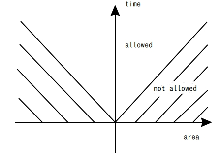
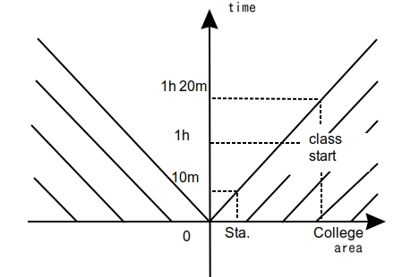
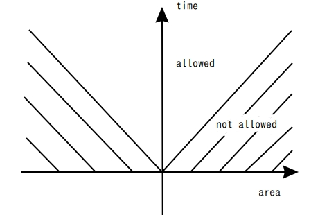
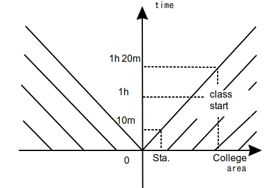

絶対不可侵領域
2019/9/18
僕は家を朝9:30に出発して10:30開始の講義に間に合ったことは一度もない。まず自宅から最寄駅までどんなに急いでも10分かかる、そして最寄駅から大学の最寄り駅まで1時間、さらにそこから学部棟まで急ぎ足で10分。
ここにあげた所要時間はそれぞれ現実的かつ経済的に最大効率の方法を取った場合のものであるから、これ以上に縮めることはできない。
この世の最高速は今のところ光速の秒速30万kmである。だから、ある人間が知り得る情報はその人を中心として、例えば半径30万km先までの領域内で起きた1秒前の事象、別の言い方をすれば半径3000万km先までの領域内の100秒前の事象である。 つまりある過去の時刻が指定されると、ある人間が知り得るその時刻に起きた事象の情報はある距離的領域内に制限される。これをわかりやすく図で示したのが下の光円錐である。簡単のため二次元平面に投影した。

斜線部は絶対不可侵領域である。例えば(area,time)=(31万km,1秒)は不可侵領域内である。時間が過去に向かっているとすれば、ここの情報は如何様にしても手に入らない。 逆に時間が未来に向かっていると見れば、ここにはどんな手段をもってしても到達することができない。
面白いことに、これと同様にして僕の遅刻の確実性が説明できる。以下に示したのが僕の円錐である。

(area,time)=(0,0)は"朝9:30に僕が家にいる"という事象を示す。授業の開始を示す事象は(College,1h)に存在する。これは不可侵領域内にあり、僕が存在しうる領域と絶対に重ならない。 だから、9:30に家を出発した僕は必ず10:30開始の授業に遅刻する。ちなみに、この存在可能領域と不可侵領域とを隔てる境界を世界線と呼ぶ。僕が現実的かつ経済的に最大効率の方法をもって移動した場合の軌跡である。
とまぁ、こんな感じで僕はいつもどうでもいいことを考えています。授業開始が世界線の向こう側にあったので遅刻しました、といっても何の正当化にもならないことは百も承知。
この世の最高速は今のところ光速の秒速30万kmである。だから、ある人間が知り得る情報はその人を中心として、例えば半径30万km先までの領域内で起きた1秒前の事象、別の言い方をすれば半径3000万km先までの領域内の100秒前の事象である。 つまりある過去の時刻が指定されると、ある人間が知り得るその時刻に起きた事象の情報はある距離的領域内に制限される。これをわかりやすく図で示したのが下の光円錐である。簡単のため二次元平面に投影した。

図1 光円錐(2次元平面投影図)
斜線部は絶対不可侵領域である。例えば(area,time)=(31万km,1秒)は不可侵領域内である。時間が過去に向かっているとすれば、ここの情報は如何様にしても手に入らない。 逆に時間が未来に向かっていると見れば、ここにはどんな手段をもってしても到達することができない。
面白いことに、これと同様にして僕の遅刻の確実性が説明できる。以下に示したのが僕の円錐である。

図2 僕の円錐(2次元平面投影図)
(area,time)=(0,0)は"朝9:30に僕が家にいる"という事象を示す。授業の開始を示す事象は(College,1h)に存在する。これは不可侵領域内にあり、僕が存在しうる領域と絶対に重ならない。 だから、9:30に家を出発した僕は必ず10:30開始の授業に遅刻する。ちなみに、この存在可能領域と不可侵領域とを隔てる境界を世界線と呼ぶ。僕が現実的かつ経済的に最大効率の方法をもって移動した場合の軌跡である。
とまぁ、こんな感じで僕はいつもどうでもいいことを考えています。授業開始が世界線の向こう側にあったので遅刻しました、といっても何の正当化にもならないことは百も承知。